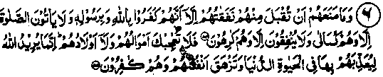

Chapter Two · Section (a): Ayaat on warning against miserliness and hoarding
1. Hoarding gold and silver
5- They who hoard up gold and silver and do not spend it in the way of Allah, unto them give tidings (O, Muhammad) of a painfill doom. On that Day when it will (all) be .heated in the fire of Jahannam, and their foreheads and flanks and their backs will be branded therewith (and it will be said unto them).Here is what you hoarded for yourselves. Now taste of what you used to hoard . (al-Taubah: 34-35)
Note: The Ulama have said that the mention of forehead, etc., means that all the parts of the body will be branded. Another Hadith confirms this interpretation, saying that face to foot, all will be branded. Some of the Ulama have said that there is mention of only three limbs in the Ayat because these are very sensitive to pain, while others have said that these three parts have been mentioned because, when a person meets an indigent person, he turns his face and shoulder away from him and walks off with the back towards the poor man; hence the painful suffering promised for these three particular parts. There are other reasons toe. The above Ayat mentions branding with the heated gold and silver, while the Ayat at No. 3 above mentions the property turning into a snake and chasing its owner. Both these punishments are appropriate in their respective fields, which will be clear in Hadith No. 2 of Chapter V. In the above Ayat according to Abdullah Ibne Abbas Radhiallaho anho and several Sahabah, the hoarded wealth means that particular property from which Zakaat has not been paid, while that from which Zakaat has been paid is not considered hoarded wealth. Ibne Umar Radhiallaho anho however, has said that this order was revealed before the order for paying Zakaat; thereafter, Allah Ta’ala made Zakaat, when properly paid, the source of purification of the rest of the.property.
Thauban Radhiallaho anho has said that, at the time when the above Ayat was revealed, we were accompanying Rasulullah Sallallaho alaihe wasallam on a journey. Some of the Sahabah Radhiallaho anhum submitted, "O Rasulullah, when this is the fearful reult of collecting gold and silver, what then is the best wealth to be hoarded as a treasure?”. The reply was, "The tongue which remains busy in Zikr of Allah, the heart full of thanks to Allah Ta'ala and a pious wife who helps in preparing for the Akhirah". Umar Radhiallaho anho has been quoted to say that, when the above Ayat was revealed, he went to Rasulullah Sallallaho alaihe wasallam and submitted that the Ayat weighed heavily on the minds of the Sahabah Radhiallaho anhum. Rasulullah Sallallaho alaihe wasallam said that Zakaat had been made obligatory for the very purpose of making the remaining property pure and fit for inheritance, and the best thing to be treasured is the devoted wife who causes pleasure when seen, obeys orders instantly and takes full care of herself and the husband’s property when the latter is away (on travels). In reply to a question from Abu Bakr Radhiallaho anho as to what was the best thing to be treasured, Rasulullah Sallallaho alaihe wasallam said, "The tongue in rememberance of Allah, the heart filled with thanks to Allah Ta'ala and a pious wife who helps in virtuous deeds". Abu Zart and Abu Umamah Radhiallaho anho-ma have quoted Rasulullah Sallallaho alaihe wasallam as saying that whoever has a Dinaar (gold coin), a Dirham (silver coin) or a piece of gold or silver and does, not spend it in the path of Allah, this money (unless it is kept back for paying a debt) will be taken as a treasure and will cause him to be branded on the Day of Judgment. Similarly, any one who leaves behind, after his death any amount of hoarded silver or gold, will be branded with it on the Day of Judgment,even if,later he is sent to Jahannham or forgiven
Ali Radhiallaho anho quotes Rasulullah Sallallaho alaihe wasallam as saying that Allah Ta'ala has made obligatory i the properties, of the rich Muslims, as much as would suffice for the needs of the poor. The poor suffer from hunger and want of clothing because the rich do not give away what is due on their property. Beware! Allah Ta'ala will demand an explanation from the rich about it or punish them severely! (Durre Manthur). There is a commentary on this Hadith given in ‘Kanz-ul-Ummal’. And it has been narrated in another Hadith, on the authority of Abu Hurairah Radhiallaho anho, “If in the knowledge of Allah Ta'ala, Zakaat were not sufficient for the poor, He would enjoin something more to be paid, apart from Zakaat". Therefore, the hunger of the poor is a consequence of the rich people’s sin of withholding Zakaat, or not paying it in full. (Kanz). Bilal Radhiallaho anho has quoted Rasulullah Sallallaho alaihe wasallam as saying,"Meet Allah Ta'ala in a state of poverty and not in riches". When asked how is that to be, the reply was, "When you get something, do not hide it and do not refuse a needy person". On the query as to how that was possible, the reply was,"If that cannot he, then Jahannam is the end". Abu Zarr Ghifari Radhiallaho anho is one of those whose belief was that money was not a thing to be kept. He thought that one Dirham was one branding and two Dirhams were two brandings. We have already narrated quite a few stories about him in the foregoing pages.
Once Habib Ibne Salmah Rahmatullah alaihe, the governer of Syria, sent three hundred Dinaars (gold coins) as a gift to Abu Zarr Radhiallaho anho, with the request that he should spend the money on his own needs. But Abu Zarr Radhiallaho anho declined to accept the money saying, "Can’t you think of anyone other than me, who is more liable to be deceived into a mistrust of Allah Ta'ala (i.e. keeping so much money in one’s possession is a sign of heedlessness towards Allah Ta'ala)’ Truely, it is a deception to be unafraid of Allah’s punishments. There are many Ayaat to that effect in the Holy Qur’an; for example:
"Let not the deceiver deceive you with regard to Allah Ta'ala". (al-Faatir: 5)
The Ayat has been re-quoted below at Sr. No. 38 in Chapter six, with many more Ayaat about this world and the Akhirah. Abu Zarr Radhiallaho anho then added, T need but a little shelter to protect myself against the sun, three milch goats whose milk should suffice for our family, and a slave-woman good enough to take care of me and my family. And I feel afraid (of Allah Ta'ala) to keep anything that exceeds my bare necessities". Abu Zarr Radhiallaho anho is also reported to have said, "On the Day of Resurrection, the one who possessed two Dirhams will be detained longer (for Reckoning) than the person who possessed one Dirham". (Durre Manthur)
Abdullah Ibne Saamit Radhiallaho anho says, T was once sitting in company with Abu Zarr Radhiallaho anho, when a man brought for him his daily allowance from the Baitul Maal (Public Treasury). He sent his slave-woman to the market who bought for him the things he needed for the day. After this, he was left with seven Dirhams. He told her to get small change for the money so that he might distribute it among the poor. I asked him to keep it, for he
might want it for entertaining his guests or for any other need that might arise. Abu Zarr Radhiallaho anho said that Rasulullah Sallallaho alaihe wasallam had told him once, "It is an established fact that whosoever hoards some gold or silver is like one keeping a spark of the fire of Jahannam in his possession, until he spends it for the cause of Allah." (Targheeb).
Shaddad Rahmatullah alaihe says that Abu Zarr Radhiallaho anho would listen to Rasulullah Sallallaho alaihe wasallam giving a strict commandment regarding a matter and then go to his lonely resort in the forest (where he was living). Sometimes, the commandments were made lenient afterwards (as a concession to the weaker natures) but he did not know of it, and, therefore, stuck to the same strict commandment. (Durre Manthur). It is true that Abu Zarr Radhiallaho anho held extremely stern views concerning money matters; undoubtedly perfect asceticim consists in adhering to his views, and our spiritual leaders lived up to the same high standards of renunciation. But it is not worthwhile imposing these high standards on everybody; nor does, as a rule, failure to comply with them,lead one to Jahannam. Fortunate are those who can be stem and austere in these matters, of their own sweet accord, with the special aid and favour from Allah Subhanahu Ta‘ala. May Allah grant this humble author, who regards himself to be a mere world-ing /something of the fine qualities possessed by the great ascetics of those times.
"Truly, Allah is Able to do all things".
